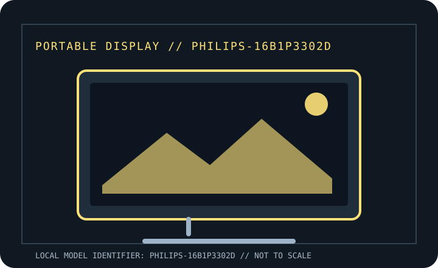

[ INDIVIDUAL COMPONENT // DISPLAYS ]
Philips 16B1P3302D Portable Monitor
Manufacturer-specific portable monitor record. Verify the full rear-label SKU, region and documentation revision before connecting power or relying on a maximum mode.

IDENTIFICATION: Portable computer monitor SKU with a unique model record. Match the rear label and regional suffix to the manufacturer's product page/manual; similarly named models may use different ports or power behavior.
Specifications
| Catalog subcategory | Portable displays |
|---|---|
| Exact product / family | Philips 16B1P3302D Portable Monitor |
| Panel / diagonal | 15.6-inch viewable (16-inch class) IPS LCD |
| Native resolution | 1920 × 1080 (Full HD) |
| Native refresh / maximum | 60 Hz |
| Brightness (typical) | 250 cd/m² typical |
| USB-C interface | Dual USB-C connectivity with DisplayPort Alt Mode video and USB-C power. The product supports notebook charging only with a compatible host/charger path; confirm exact PD wattage and port roles in the regional product manual. |
| HDMI interface | No HDMI input; video input is USB-C. HDMI requires a suitable active USB-C adapter and separate monitor power, neither of which is a native port. |
| Power / USB Power Delivery | USB-C powered; compatible USB-C PD source is required for simultaneous video and power. Do not assume a fixed charging output to the host without checking the exact regional specification sheet. |
| OSD / controls | On-device controls and Philips SmartControl/OSD features where supported; brightness and display settings are adjusted at monitor. Software/OS support varies by platform. |
| Stand / mounting | Integrated continuously adjustable kickstand (0–90°); no standard VESA mount is listed for this model. |
Host, OSD & compatibility notes
USB-C host must provide DisplayPort Alt Mode; device support for charging/video simultaneously depends on USB-C PD implementation. Basic image output is host-OS agnostic when the GPU exposes the supported timing; management software is OS-specific.
Model-specific caveat: 16B1P3302D regional suffixes and bundles matter. It has no native HDMI input; do not confuse it with other Philips portable-monitor variants or assume USB-C PD output wattage from connector shape alone.
Field use & preservation
Protect the LCD/touch surface in transport, avoid loading the USB-C or HDMI sockets sideways, and test video, power and touch (where fitted) as separate signal paths. Keep the correct cable and power adapter with the monitor.
Record the rear-label model/serial, included cover/stand, cable and adapter ratings, signal timing, OSD configuration, panel condition and any repaired or substituted accessories. Do not open the enclosure; use the manufacturer's service procedure and a qualified technician.
Manufacturer documentation & sources
- Philips — 16B1P3302D/27 product pagePhilips manufacturer listing for this portable monitor and dual USB-C design.
- Philips Support — 16B1P3302D/27 manuals and downloadsOfficial model-specific documentation/download page; select the matching region/revision.